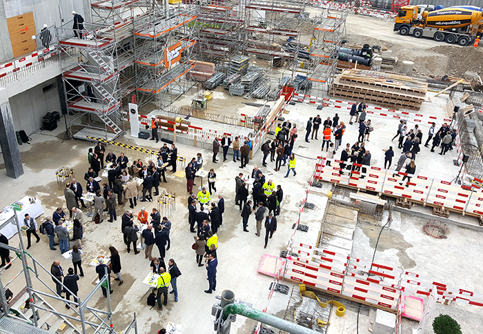

Offizieller Anlass, am 24.03.2017: Grundsteinlegung.
NYX architectes GmbH ist vom Architekturbüro Richter Dahl Rocha & Associés architectes SA in Lausanne für die Ausführungsplanung eines Teilobjektes von “The Circle” am Flughafen Zürich beauftragt worden.
NYX architectes bearbeitet die Ausführungsplanung des Gebäudes H15. Das 10-geschossige Gebäude besteht aus Gewerbeflächen, Büroräume, Bars, Restaurants und ein 4* Superior Hotel (Hyatt Regency) mit 256 Zimmer.